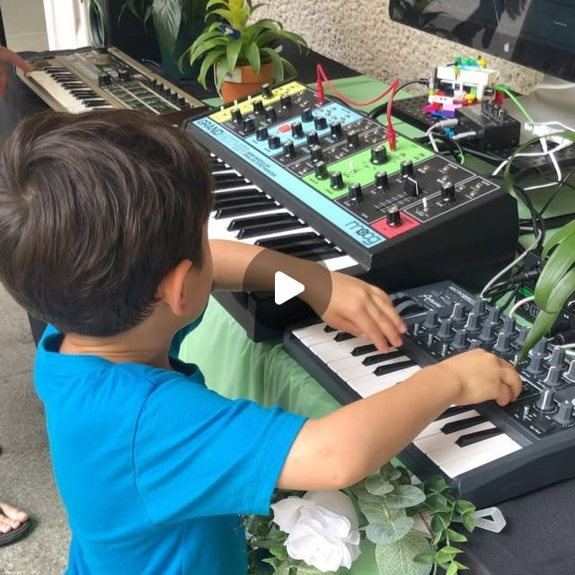

01 · Bio-sonification
Sonic Plants
An interactive, multi-sensory audio installation built around bio-sonification: translating the hidden processes of nature into something people can hear.
Sensors clipped onto living plants pick up their internal electrical currents, the tiny voltage fluctuations moving through each plant. Those signals are fed into synthesizers and software, so each plant becomes an interactive MIDI instrument. Visitors touch and interact with the plants, and every gesture shapes a unique ambient soundscape.
The piece draws attention to the voltage-based communication inside the plant kingdom, and to how alive nature is.
How it works
Sonic Plants was Dag’s first appearance as a Sound Scene artist, where “visitors could make music using electronic current signals transmitted directly from plants” (Sound Scene). The date comes from Dag’s Instagram post of April 22, 2020 (“Last summer…”).

“Last summer I had an installation at the @hirshhorn where people could make music using sonic frequencies transmitted from plants. Nature is powerful and very alive. Happy #earthday 🌿” @dagtheman on Instagram, April 22, 2020 · View post (photos & video)